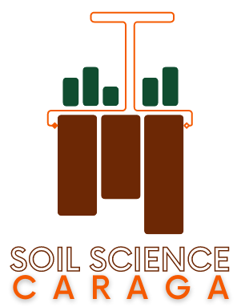

Research Dashboard

Home
News Feed
Research Dashboard
FieldX Apps
On this page
By the Numbers
Faculty Research Overview
Research Distribution by Status
Project Search Directory
Research Dashboard
By the Numbers
Faculty Research Overview
Total Projects
4
Ongoing Research
2
Total Funding
Php 12,253,990.00
Research Distribution by Status
Project Search Directory
News Feed
FieldX Apps